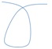
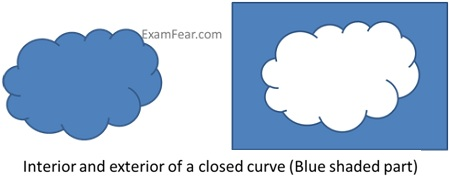

Curves
A curve is a line or outline which gradually deviates from being straight for some or all of its length.
|
Curve type |
Figure |
|
Simple curve that is not closed |
|
|
Not a simple curve |
 |
|
Simple closed curve |
|
|
A closed curve that is not simple |
